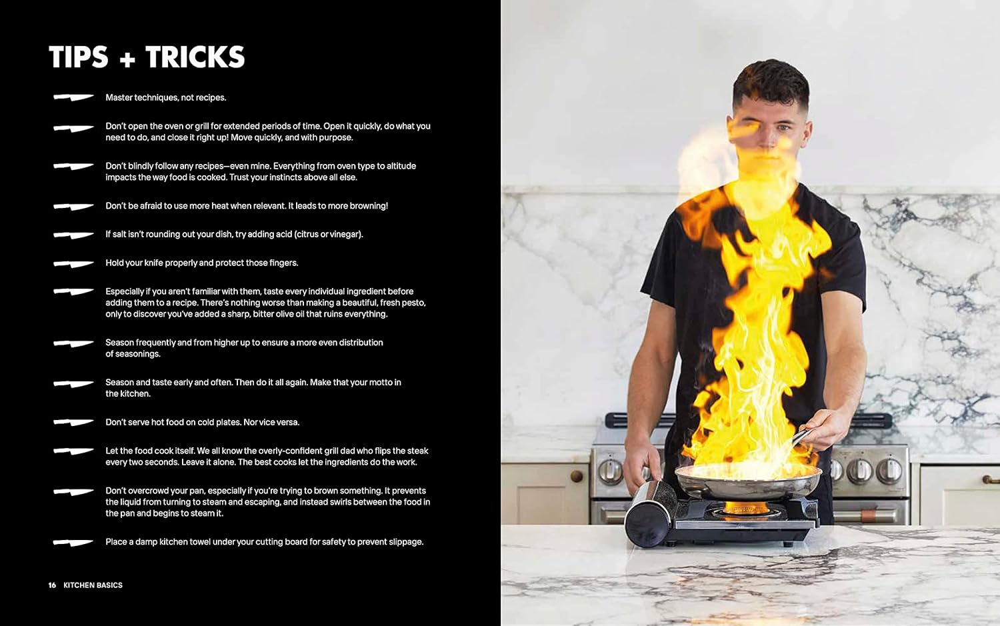
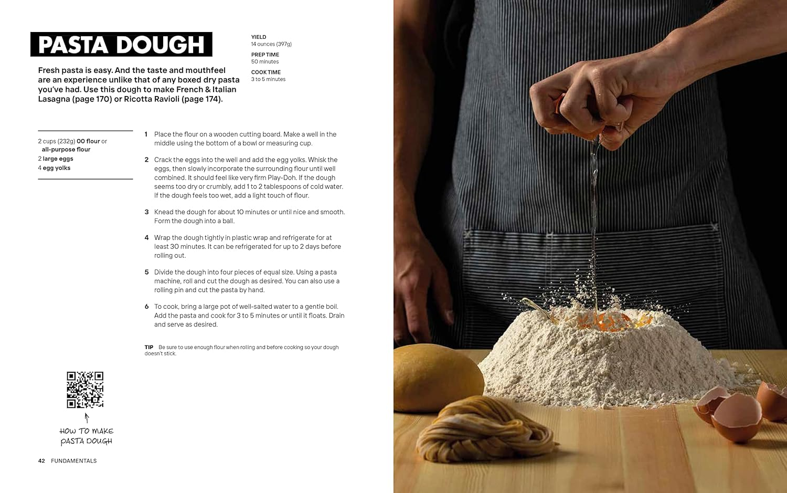
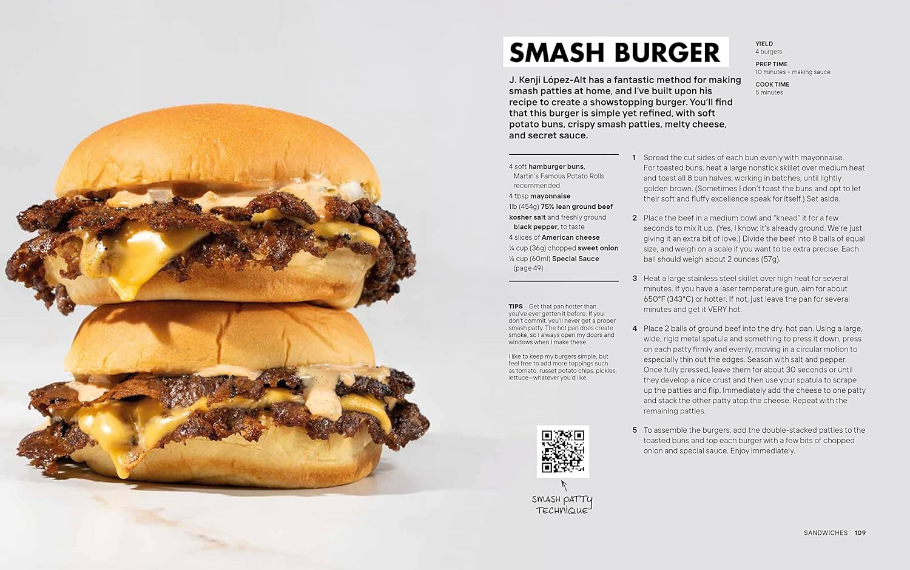

Knife Drop: Creative Recipes Anyone Can Cook
by Nick DiGiovanni, Gordon Ramsay
| June 13, 2023
$47.99

Summary
Forget the rules and get cooking with flavor-forward recipes from celebrity chef and social media superstar Nick DiGiovanni!
Home-cooked food doesn’t need to be over-the-top, fussy, or time-consuming to be amazing. In Knife Drop, Nick DiGiovanni gives you the tools to become fearless in the kitchen and create easy, delicious meals.
Building on a foundation of staple recipes, like basic pasta dough or homemade butter, Nick shares a mouthwatering selection of his favorite recipes. Feast on New England favorites like Browned Butter Lobster Rolls and Garlic Butter Steak Tips, enjoy decadent pasta dishes like Smoky Mezcal Rigatoni and Sungold Spaghetti, and recreate fan favorites like his Viral Pasta Chips and Dino Nuggets. And of course, Nick had to include some “collab” recipes from his famous friends like Andrew Zimmern, Robert Irvine, Joanne Chang, Lynja, and more.
Knife Drop also includes Nick’s expert advice on equipment, ingredients, and techniques, so home cooks at any level can pick up some new skills. Explore a library of QR codes linking to video tutorials showcasing key cooking techniques, from holding a chef’s knife and making a piping bag to pronouncing “gnocchi” the correct way.
These are creative recipes ANYONE can cook!